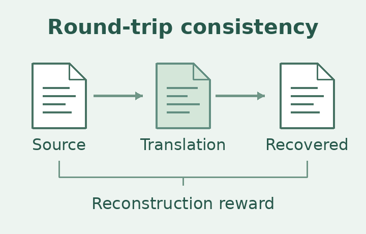
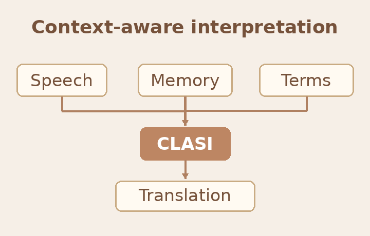

About me
I’m a Senior Principal Engineer on the Seed Model team at ByteDance in Singapore. I build multilingual models for speech, text, and video. I’m particularly interested in what makes a translation faithful when context is incomplete. A live interpreter has to commit to words before a speaker finishes a sentence. A subtitle may only make sense once you see what the speaker is pointing at.
I led Seed LiveInterpret 2.0 and Seed-X. For LiveInterpret, we built a duplex model that listens and speaks at the same time, translating between English and Chinese while preserving the speaker’s voice. For Seed-X, we trained and released 7B-parameter models for translation across 28 languages. My recent work on LongDu asks how to tell whether a translation has preserved the details of an entire document.
Before joining Seed Model, I led ByteDance’s Cross Language Agent team. Our VolcTrans platform provided machine translation for TikTok, CapCut, and Lark. Earlier, I led teams in the WMT news translation shared tasks. Our submissions achieved the top BLEU score for Chinese to English in 2017, all five directions we entered in 2018, and German to English in 2021.
Publications
Full list on Google Scholar2026
-
ACL
Improving Long-Context Translation via Self-Supervised Dual Learning
LongDu trains on monolingual documents. It favors translations that retain enough information to reconstruct the original document.

2025
-
arXiv preprint
Seed LiveInterpret 2.0: End-to-end Simultaneous Speech-to-speech Translation with Your Voice
A duplex model interprets between English and Chinese while preserving each speaker’s voice, with an average delay of about three seconds in our evaluation.

-
arXiv preprint
Seed-X: Building Strong Multilingual Translation LLM with 7B Parameters
A family of open-weight 7B models for translation across 28 languages, including instruction-tuned and reasoning variants.

2024
-
arXiv preprint
Towards Achieving Human Parity on End-to-end Simultaneous Speech Translation via LLM Agent
CLASI learns when to listen and when to translate. It retrieves domain terminology to interpret specialized speech.

2023
2022
2021
2018
2017
2016
Education & service
I earned my M.Sc. in Computer Science and Technology at Nanjing University, where I studied interactive machine translation with Jiajun Chen and Shujian Huang.
I served as an area chair for IJCNLP-AACL 2023 and have reviewed for ACL, EMNLP, NAACL, AAAI, and NeurIPS.